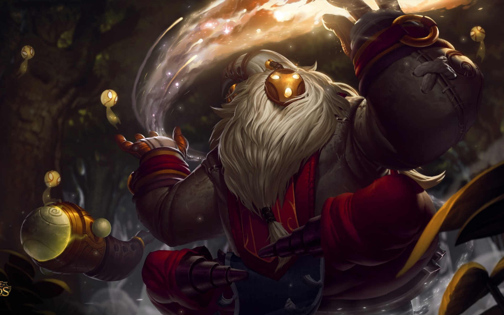

|
|
Aatrox, The Darkin Blade
Passive - DEATHBRINGER STANCE
Periodically, Aatrox's next basic attack deals bonus physical damage and heals him, based on the target's max health.
Q - THE DARKIN BLADE
Aatrox slams his greatsword down, dealing physical damage. He can swing three times, each with a different area of effect.
W - INFERNAL CHAINS
Aatrox smashes the ground, dealing damage to the first enemy hit. Champions and large monsters have to leave the impact area quickly or they will be dragged to the center and take the damage again.
E - UMBRAL DASH
Passively, Aatrox heals when damaging enemy champions. On activation, he dashes in a direction.
R - WORLD ENDER
Aatrox unleashes his demonic form, fearing nearby enemy minions and gaining attack damage, increased healing, and movement speed. If he gets a takedown, this effect is extended.
|
|
|
Alistar, The Minotaur
Passive - TRIUMPHANT ROAR
Alistar charges his roar by stunning or displacing enemy champions or when nearby enemies die. When fully charged he heals himself all nearby allied champions.
Q - PULVERIZE
Alistar smashes the ground, dealing damage to nearby enemies and tossing them into the air.
W - HEADBUTT
Alistar rams a target with his head, dealing damage and knocking the target back.
E - TRAMPLE
Alistar tramples nearby enemy units, ignoring unit collision and gaining stacks if he damages an enemy champion. At full stacks Alistar's next basic attack against an enemy champion deals additional magic damage and stuns them.
R - UNBREAKABLE WILL
Alistar lets out a wild roar, removing all crowd control effects on himself, and reducing incoming physical and magical damage for the duration.
|
|
|
Amumu, The Sad Mummy
Passive - CURSED TOUCH
Amumu's basic attacks Curse his enemies, causing them to take bonus true damage from incoming magic damage.
Q - BANDAGE TOSS
Amumu tosses a sticky bandage at a target, stunning and damaging the target while he pulls himself to them.
W - DESPAIR
Overcome by anguish, nearby enemies lose a percentage of their maximum Health each second and have their Curses refreshed.
E - TANTRUM
Permanently reduces the physical damage Amumu would take. Amumu can unleash his rage, dealing damage to surrounding enemies. Each time Amumu is hit, the cooldown on Tantrum is reduced by 0.5 seconds.
R - CURSE OF THE SAD MUMMY
Amumu entangles surrounding enemy units in bandages, applying his Curse, damaging and stunning them.
|
|
|
Aphelios, The Weapon of the Faithful
Passive - THE HITMAN AND THE SEER
Aphelios wields 5 Lunari Weapons made by his sister Alune. He has access to two at a time: one main-hand and one off-hand. Each weapon has a unique Basic Attack and Activated Ability. Attacks and abilities consume a weapon's ammo. When out of ammo, Aphelios discards the weapon and Alune summons the next of the 5.
Q - WEAPON ABILITES
Aphelios has 5 different activated abilities, based on his main-hand weapon: Calibrum (Rifle): Long range shot that marks its target for a long-range follow-up attack. Severum (Scythe Pistol): Run fast while attacking nearby enemies with both weapons. Gravitum (Cannon): Root all enemies slowed by this weapon. Infernum (Flamethrower): Blast enemies in a cone and attack them with your off-hand weapon. Crescendum (Chakram): Deploy a sentry that shoots your off-hand weapon.
W - PHASE
Aphelios swaps his main-hand gun with his off-hand gun, replacing his basic attack and activated ability.
E - WEAPON QUEUE SYSTEM
Aphelios has no third ability. This slot shows the next weapon Alune will give him. Weapon order begins fixed but may change over game time -- when a weapon is out of ammo it goes to the end of the order.
R - MOONLIGHT VIGIL
Fire a concentrated blast of moonlight that explodes on enemy champions. Applies the unique effect of Aphelios' main-hand gun.
|
|
|
Aurelion Sol, The Star Forger
Passive - CENTER OF THE UNIVERSE
Stars orbit Aurelion Sol, dealing magic damage when they hit an enemy.
Q - STARSURGE
Aurelion Sol creates an expanding disk, which explodes to stun and damage enemies when it moves too far away from him.
W - CELESTIAL EXPANSION
Aurelion Sol pushes his stars farther out, increasing their damage and speed.
E - COMET OF LEGEND
Aurelion Sol takes off flying for a long distance.
R - VOICE OF LIGHT
Aurelion Sol projects a blast of pure starfire, damaging and slowing all enemies caught in it and knocking nearby enemies back to a safer distance.
|
|
|
Azir, The Emperor of The Sands
Passive - SHURIMA'S LEGACY
Azir can summon the Disc of the Sun from the ruins of allied or enemy turrets.
Q - CONQUERING SANDS
Azir sends all Sand Soldiers towards a location. Sand Soldiers deal magic damage to enemies they pass through and apply a slow for 1 second.
W - ARISE!
Azir summons a Sand Soldier to attack nearby targets for him, replacing his basic attack against targets within the soldier's range. Their attacks deal magic damage to enemies in a line. Arise! also passively grants attack speed to Azir and his Sand Soldiers.
E - SHIFTING SANDS
Azir shields himself briefly and dashes to one of his Sand Soldiers, damaging enemies. If he hits an enemy champion, he instantly readies a new Sand Soldier for deployment and halts his dash.
R - EMPEROR'S DIVIDE
Azir summons a wall of soldiers which charge forward, knocking back and damaging enemies.
|
| 
|
Bard, The Wandering Caretaker
Passive - TRAVELER'S CALL
Meeps: Bard attracts lesser spirits that assist with his basic attacks to deal extra magic damage. When Bard has collected enough Chimes, his meeps will also deal damage in an area and slow enemies hit. Chimes: Ancient chimes randomly appear for Bard to collect. These grant experience, maximum mana, and out-of-combat movement speed stacks.
Q - COSMIC BINDING
Bard fires a missile which will slow the first enemy struck, and continue onward. If it strikes a wall, it will stun the initial target; if it strikes another enemy, it will stun them both.
W - CARETAKER'S SHRINE
Reveals a healing shrine which powers up over a short time, disappearing after healing and speeding up the first ally that touches it.
E - MAGICAL JOURNEY
Bard opens a portal in nearby terrain. Allies and enemies alike can take a one-way trip through that terrain by moving into the portal.
R - TEMPERED FATE
Bard sends spirit energy arcing to a location, putting all champions, minions, monsters, and turrets hit into stasis for a brief time.
|
|
|
Brand, The Burning Vengeance
Passive - BLAZE
Brand's spells light his targets ablaze, dealing damage over 4 seconds, stacking up to 3 times. If Brand kills an enemy while it is ablaze he regains mana. When Blaze reaches max stacks on a Champion, siege minion, or large monster, it becomes unstable. It detonates in 2 seconds, applying spell effects and dealing massive damage in an area around the victim.
Q - SEAR
Brand launches a ball of fire forward that deals magic damage. If the target is ablaze, Sear will stun the target for 1.5 seconds.
W - PILLAR OF FLAME
After a short delay, Brand creates a Pillar of Flame at a target area, dealing magic damage to enemy units within the area. Units that are ablaze take an additional 25% damage.
E - CONFLAGRATION
Brand conjures a powerful blast at his target that spreads to nearby enemies, dealing magic damage. If the target is ablaze, Conflagration's spread is doubled.
R - PYROCLASM
Brand unleashes a devastating torrent of fire that bounces up to 5 times off of Brand and nearby enemies, dealing magic damage to enemies each time bounce. Bounces prioritize stacking Blaze to max on Champions. If a target is ablaze, Pyroclasm will briefly slow them.
|
|
|
Blitzcrank, The Great Steam Golemn
Passive - MANA BARRIER
Blitzcrank gains a shield based on his mana when dropping to low health.
Q - ROCKET GRAB
Blitzcrank fires his right hand to grab an opponent on its path, dealing damage and dragging it back to him.
W - OVERDRIVE
Blitzcrank super charges himself to get dramatically increased Movement and Attack Speed. He is temporarily slowed after the effect ends.
E - POWER FIST
Blitzcrank charges up his fist to make his next attack deal double damage and pop his target up in the air.
R - STATIC FIELD
Enemies attacked by Blitzcrank are marked and take lightning damage after 1 second. Additionally, Blitzcrank can activate this ability to remove nearby enemies' shields, damage them, and silence them briefly.
|
|
|
Braum, The Heart of the Freljord
Passive - CONCUSSIVE BLOWS
Braum's basic attacks apply Concussive Blows. Once the first stack is applied, ally basic attacks also stack Concussive Blows. Upon reaching 4 stacks, the target is stunned and takes magic damage. For the next few seconds they cannot receive new stacks, but take bonus magic damage from Braum's attacks.
Q - WINTER'S BITE
Braum propels freezing ice from his shield, slowing and dealing magic damage. Applies a stack of Concussive Blows.
W - STAND BEHIND ME
Braum leaps to a target allied champion or minion. On arrival, Braum and the ally gain Armor and Magic Resist for a few seconds.
E - UNBREAKABLE
Braum raises his shield in a direction for several seconds, intercepting all projectiles causing them to hit him and be destroyed. He negates the damage of the first attack completely and reduces the damage of all subsequent attacks from this direction.
R - GLACIAL FISSURE
Braum slams the ground, knocking up enemies nearby and in a line in front of him. A fissure is left along the line that slows enemies.
|
|
|
Cho'gath, The Terror of the Void
Passive - CARNIVORE
Whenever Cho'Gath kills a unit, he recovers Health and Mana. The values restored increase with Cho'Gath's level.
Q - RUPTURE
Ruptures the ground at target location, popping enemy units into the air, dealing damage and slowing them.
W - FERAL SCREAM
Cho'Gath unleashes a terrible scream at enemies in a cone, dealing magic damage and Silencing enemies for a few seconds.
E - VORPAL SPIKES
Cho'Gath's attacks release deadly spikes, dealing damage and slowing all enemy units in front of him.
R - FEAST
Devours an enemy unit, dealing a high amount of true damage. If the target is killed, Cho'Gath grows, gaining maximum Health.
|
|
|
Corki, The Daring Bombraider
Passive - HEXTECH MUNITIONS
A percentage of Corki's basic attack damage is converted into magic damage. Corki can occasionally retrieve The Package inside his base, granting him movement speed and an empowered cast of Valkyrie.
Q - PHOSPHORUS BOMB
Corki fires a flash bomb at a target location, dealing magic damage to enemies in the area. This attack additionally reveals units in the area for a duration.
W - VALKYRIE
Corki flies a short distance, dropping bombs that create a trail of fire that damages opponents who remain in it.
E - GATLING GUN
Corki's gatling gun rapidly fires in a cone in front of him, dealing damage and reducing enemy Armor and Magic Resist.
R - MISSILE BARRAGE
Corki fires a missile toward his target location that explodes on impact, dealing damage to enemies in an area. Corki stores missiles over time, up to a maximum. Every 3rd missile fired will be a Big One, dealing extra damage.
|

|
Darius, The Hand of Noxus
Passive - HEMORRHAGE
Darius's attacks and damaging abilities cause enemies to bleed for physical damage over 5 seconds, stacking up to 5 times.
Q - DECIMATE
Darius winds up and swings his axe in a wide circle. Enemies struck by the blade take more damage than those struck by the handle. Darius heals based on enemy champions and large monsters hit by the blade.
W - CRIPPLING STRIKE
Darius's next attack strikes an enemy's crucial artery. As they bleed out, their Movement Speed is slowed.
E - APPREHEND
Darius hones his axe, passively causing his physical damage to ignore a percentage of his target's Armor. When activated, Darius sweeps up his enemies with his axe's hook and pulls them to him.
R - NOXIAN GUILLOTINE
Darius leaps to an enemy champion and strikes a lethal blow, dealing true damage. This damage is increased for each stack of Hemorrhage on the target. If Noxian Guillotine is a killing blow, its cooldown is refreshed for a brief duration.
|
|
|
Yasuo, The Unforgiven
Passive - WAY OF THE WANDERER
Yasuo's Critical Strike Chance is increased. Additionally, Yasuo builds toward a shield whenever he is moving. The shield triggers when he takes damage from a champion or monster.
Q - STEEL TEMPEST
Thrusts forward, damaging all enemies in a line. On hit, grants a stack of Gathering Storm for a few seconds. At 2 stacks, Steel Tempest fires a whirlwind that knocks Airborne. Steel Tempest is treated as a basic attack and scales with all the same things.
W - WIND WALL
Creates a moving wall that blocks all enemy projectiles for 4 seconds.
E - SWEEPING BLADE
Dashes through target enemy, dealing magic damage. Each cast increases your next dash's base Damage, up to a max amount. Cannot be re-cast on the same enemy for a few seconds. If Steel Tempest is cast while dashing, it will strike as a circle.
R - LAST BREATH
Blinks to an Airborne enemy champion, dealing physical damage and holding all Airborne enemies in the area in the air. Grants maximum Flow but resets all stacks of Gathering Storm. For a moderate time afterwards, Yasuo's critical strikes gain significant Bonus Armor Penetration.
|